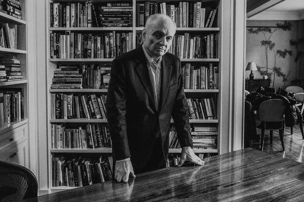
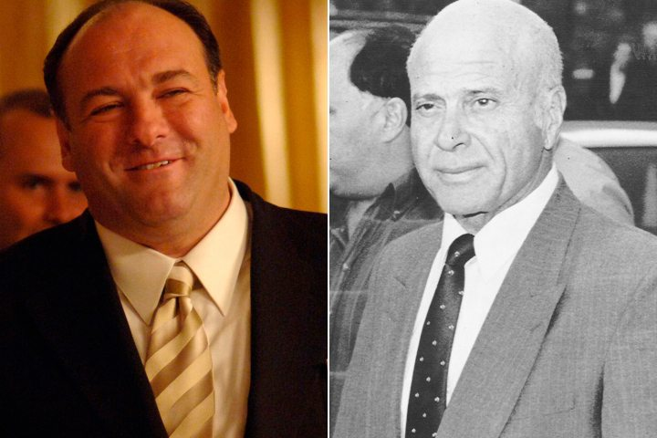

Concepcion
Antes de crear Los Soprano, David Chase había trabajado como guionista durante veinte años. Trabajó como guionista y productor en varias series de televisión (incluidas Kolchak: The Night Stalker, The Rockford Files, I'll Fly Away y Doctor en Alaska) y fue uno de los creadores de la efímera serie Almost Grown, en 1988. Antes de su éxito con Los Soprano, Chase ganó dos Premios Emmy: uno en 1980 por el guion del telefilme Off the Minnesota Strip, y otro en 1978 por su trabajo en The Rockford Files (compartido con otros productores).
Historia e Inspiracion
La historia de Los Soprano fue inicialmente concebida como un largometraje sobre "un mafioso en terapia que tiene problemas con su madre". Tras algunas aportaciones de su mánager, Lloyd Braun, Chase decidió adaptarlo a una serie de televisión. En 1995, Chase firmó un contrato con la compañía de producción Brillstein-Grey y escribió el guion original del episodio piloto. Basándose en gran medida en su vida personal y en sus experiencias creciendo en Nueva Jersey, Chase aseguró que trató de "aplicar [su propia] dinámica familiar a los mafiosos". Por ejemplo, la tormentosa relación entre el protagonista Tony Soprano y su madre, Livia, se basa, en gran parte, en la relación de Chase con su propia madre. Durante esa época, Chase también fue a terapia y modeló el personaje de la Dra. Jennifer Melfi a partir de su propio psiquiatra. Desde temprana edad, Chase ya había mostrado interés en la mafia tras crecer con clásicas películas de gánsteres como El enemigo público y la serie Los Intocables. En gran medida, la historia de la serie está inspirada en la auténtica Familia criminal DeCavalcante, que se convirtió en la principal familia del crimen organizado de Nueva Jersey durante la juventud de Chase. El nombre de la serie, por otra parte, proviene de unos amigos suyos del instituto. Chase pensaba que el escenario de la mafia le permitiría explorar temas como la identidad italoestadounidense y la naturaleza de la violencia, entre otros. El propio Chase es de ascendencia italiana y su apellido real es DeCesare.
Chase y el productor Brad Grey, de Brillstein-Grey, ofrecieron Los Soprano a varias cadenas. FOX mostró interés, pero decidieron rechazar la propuesta después de que Chase les presentara el episodio piloto. Chase y Grey finalmente ofrecieron la serie al entonces director de contenidos de HBO, Chris Albrecht, que reconoció la originalidad y el potencial de Los Soprano, y decidió financiar el rodaje de un episodio piloto. Albrecht dijo: “Me dije, esta serie trata sobre un tipo en torno a los cuarenta años. Ha heredado el negocio de su padre y está tratando de modernizarlo a nuestros días, con todas las responsabilidades que ello implica. Tiene una madre autoritaria de la cual aún trata de escaparse. A pesar de que ama a su esposa, ha tenido una aventura. Tiene dos hijos adolescentes y está haciendo frente a la realidad que ello conlleva. Está preocupado y deprimido, y comienza a ver a una terapeuta porque está buscando el significado de su propia vida. Pensé: la única diferencia entre él y toda la gente que conozco es que él es el Don de Nueva Jersey.”